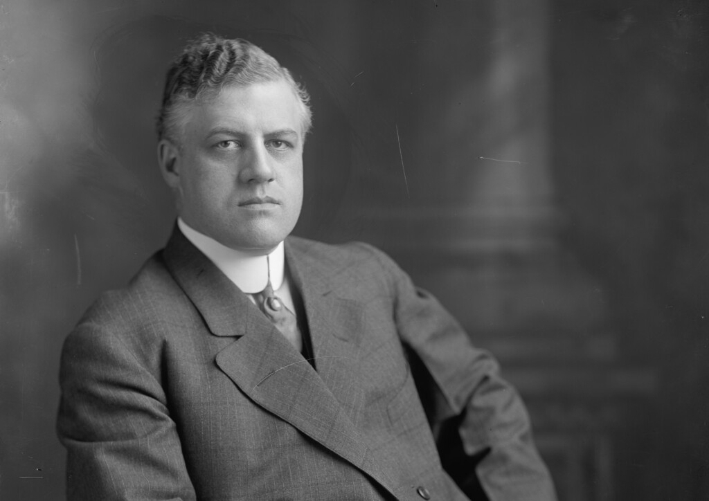
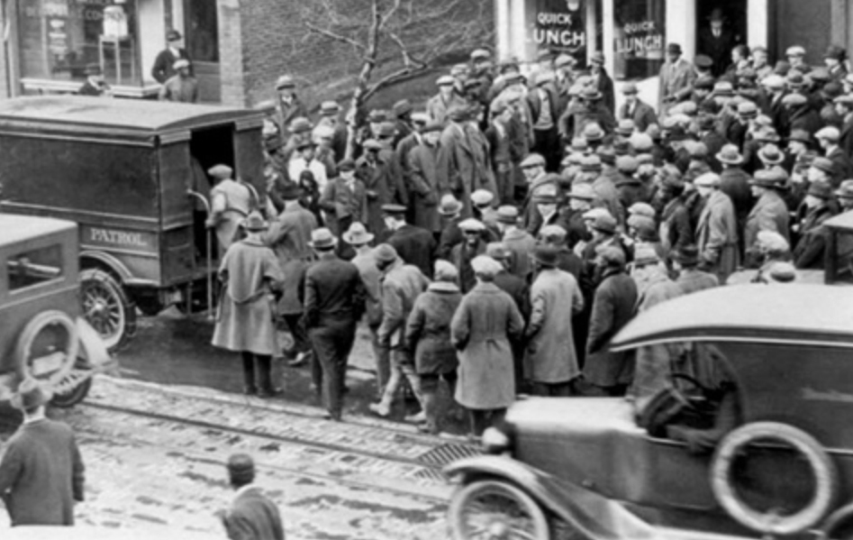
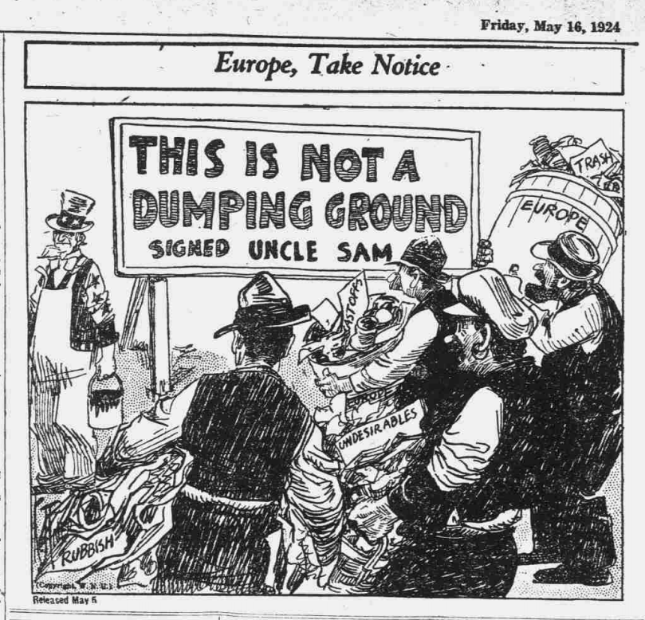
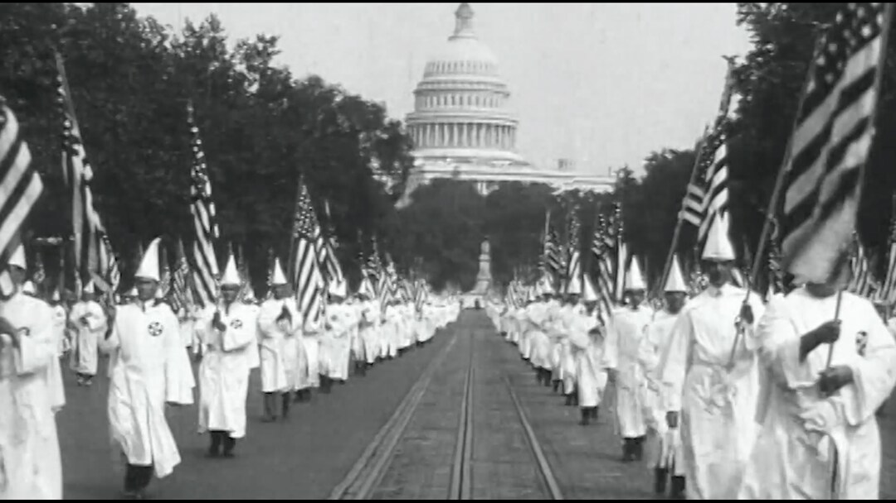
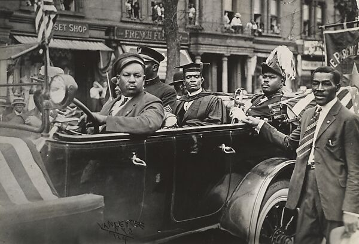
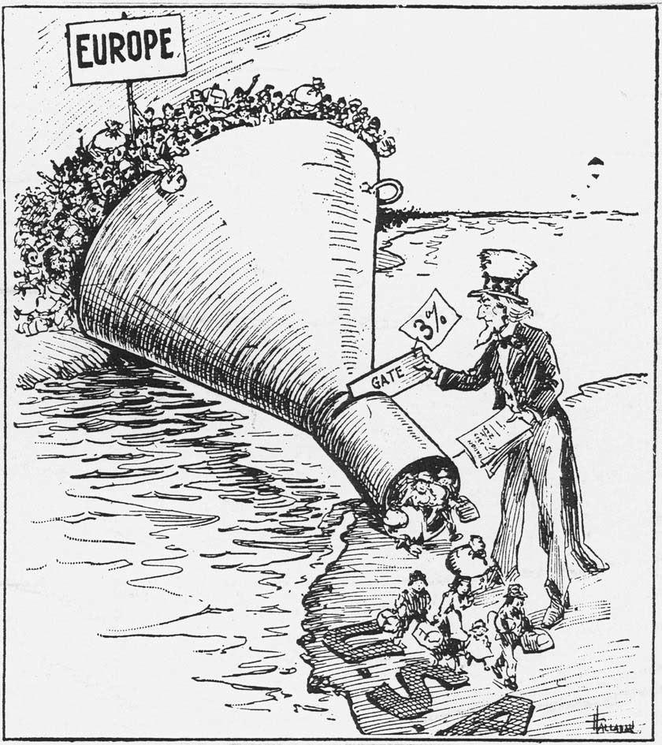
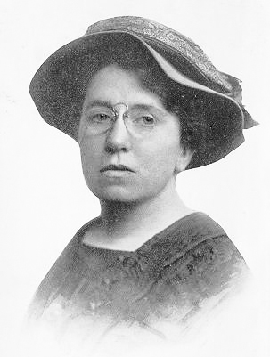

ESSENTIAL QUESTIONHow can a decade of prosperity also be a decade of fear and repression?
On a cold night in January 1920, federal agents burst into meeting halls, homes, and offices across the country. People were arrested for their politics, their speech, their immigrant background, or the groups they joined. Some were held without lawyers. Some were deported.
On a cold night in January 1920, federal agents raided homes, offices, and meeting halls. People were arrested because of their politics, speech, immigrant background, or groups. Some had no lawyers. Some were deported.
This was the strange side of the 1920s. The decade had jazz, movies, cars, and new money. It also had raids, quotas, the Ku Klux Klan, and fear of people seen as un-American.
This was the strange side of the 1920s. The decade had jazz, movies, cars, and new money. It also had raids, immigration limits, the Ku Klux Klan, and fear.
CHAPTER ONE
THE RED SCARE TURNS FEAR INTO RAIDS

A. Mitchell Palmer was Attorney General during the first Red Scare. Library of Congress.
After World War I, many Americans feared revolution. Russia had become communist in 1917, and some workers in the United States were striking. This panic became the Red ScareFear that communists or radicals would overthrow society.. Many people connected immigrants, labor unions, and radicals with danger.
After World War I, many Americans feared revolution. Russia had become communist in 1917. Some workers in the U.S. were striking. This panic became the Red Scare.
Attorney General A. Mitchell Palmer ordered the Palmer RaidsMass arrests of suspected radicals in 1919 and 1920.. Federal agents arrested thousands of suspected radicals. Many arrests ignored due processFair legal steps before punishment., which means the government must follow fair legal steps. Some people were jailed without clear evidence.
Attorney General Palmer ordered the Palmer Raids. Federal agents arrested thousands of people accused of being radicals. Many arrests ignored due process. That means the government did not follow fair legal steps.

Suspected radicals were arrested during the Palmer Raids, 1919-1920. Library of Congress search suggested.
One famous target was Emma Goldman. Goldman was an immigrant, writer, and radical activist who criticized war, capitalism, and government power. In 1919, she and hundreds of others were forced out of the country through deportationForcing someone to leave a country.. The raids showed how fear could shrink civil libertiesBasic freedoms protected from government abuse. quickly.
One famous target was Emma Goldman. She was an immigrant, writer, and radical activist. In 1919, she and hundreds of others faced deportation. That means they were forced to leave the country. The raids showed how fear can weaken civil liberties.
Real-world connection: Rights matter most when the government says fear makes them inconvenient.
Real-world connection: Rights matter most when people are afraid.
DID YOU KNOW
The USAT Buford became known as the Soviet Ark.
The ship that carried Emma Goldman away was nicknamed the Soviet Ark. That sounds almost like a movie title, but it was real: a government ship packed with people removed from the country for their politics. Fear had become something with a boarding pass.
FAST FACTS
1919RED SCARE BEGINS
1920MASS RAIDS PEAK
1924QUOTAS HARDEN
5MKKK MEMBERS CLAIMED
CHAPTER TWO
NATIVISM GOES MAINSTREAM
NativismFavoring native-born people over immigrants. became a powerful political force in the 1920s. Nativists believed immigrants from Southern and Eastern Europe were dangerous, inferior, or unable to become American. This fear is also called xenophobiaFear or hatred of foreigners..
Nativism became powerful in the 1920s. Nativists favored native-born Americans over immigrants. They feared immigrants from Southern and Eastern Europe. This fear is called xenophobia.

Political cartoons and posters helped spread fear of immigrants in the 1920s. Library of Congress search suggested.
Congress passed immigration quota laws in 1921 and 1924. These laws sharply limited immigration from Southern and Eastern Europe. They favored immigrants from Northern and Western Europe. The message was clear: the government was choosing which groups it wanted and which groups it feared.
Congress passed immigration quota laws in 1921 and 1924. These laws limited immigrants from Southern and Eastern Europe. They favored immigrants from Northern and Western Europe. The government was choosing who it wanted.
The Ku Klux Klan also grew again in the 1920s. It expanded beyond the South into the Midwest and West. The Klan targeted Black Americans, immigrants, Catholics, Jews, and anyone it saw as outside its version of America. In some places, it became a mainstream political force.
The Ku Klux Klan grew again in the 1920s. It spread beyond the South. It targeted Black Americans, immigrants, Catholics, Jews, and others. In some places, it became part of normal politics.

Ku Klux Klan march in Washington, D.C., 1920s. The Klan became openly public during this decade. Wikimedia Commons / Library of Congress.CHAPTER THREE
COMMUNITIES ORGANIZE BACK
Fear and repression did not go unanswered. Organizations formed or grew to defend people from violence and government abuse. The NAACPGroup fighting for Black civil rights. fought lynching, segregation, and racism through courts, newspapers, and public pressure.
Fear and repression did not go unanswered. Groups formed or grew to protect people. The NAACP fought racism, segregation, and lynching. It used courts, newspapers, and public pressure.
The ACLUGroup defending free speech and legal rights. was founded in 1920 after the Red Scare. It defended free speechThe right to express ideas without punishment., fair trials, and the rights of unpopular groups. The ADL, founded earlier in 1913, fought antisemitism and defended Jewish communities from hate.
The ACLU was founded in 1920 after the Red Scare. It defended free speech, fair trials, and unpopular groups. The ADL fought antisemitism and defended Jewish communities.
NAACP
Fought racism, lynching, and segregation through law and public pressure.
ACLU
Defended speech, due process, and rights during times of fear.
ADL
Fought antisemitism and attacks on Jewish communities.
GARVEY MOVEMENT
Built Black pride and self-determination against white supremacy.

Marcus Garvey and the UNIA promoted Black pride, self-determination, and global Black unity. Wikimedia Commons / Library of Congress.
Marcus Garvey offered another response to white supremacy: Black nationalismBelief in Black pride and self-determination.. Garvey taught pride in African heritage, Black-owned businesses, and global Black unity. Millions of people listened because he spoke to a deep desire for dignity and power.
Marcus Garvey offered another response to white supremacy: Black nationalism. He taught pride in African heritage. He supported Black-owned businesses and global Black unity. Millions listened because he offered dignity and power.
ART SPOTLIGHT

Red Scare political cartoon, 1919-1920. Cartoons often turned radicals into threats that looked easy to crush.
The cartoon style is doing political work. It makes fear look funny, simple, and obvious. That is what made Red Scare art powerful: it could turn a complex argument about rights into one image of a dangerous enemy.
CHAPTER FOUR
WHAT SURVIVED AND WHAT DID NOT
The first Red Scare faded after Palmer's predicted revolution did not happen. Some Americans began to see the raids as extreme and unfair. But the damage was real. People had been arrested, deported, and frightened into silence.
The first Red Scare faded when Palmer's predicted revolution did not happen. Some Americans saw the raids as unfair. But the damage was real. People were arrested, deported, and scared into silence.

Emma Goldman was deported in 1919 because of her radical politics. Wikimedia Commons / Library of Congress.
The immigration quotas lasted much longer. They shaped who could enter the United States for decades. The Klan eventually lost some power after scandals and public criticism, but white supremacy did not disappear. It changed form and survived in laws, violence, and everyday discrimination.
The immigration quotas lasted for decades. They shaped who could enter the United States. The Klan later lost some power. But white supremacy did not disappear. It changed form and continued.
The resistance also survived. Groups like the NAACP, ACLU, and ADL kept fighting in courts, newspapers, schools, and public debates. The 1920s showed that civil liberties are not protected automatically. People have to defend them, especially when fear is popular.
The resistance also survived. The NAACP, ACLU, and ADL kept fighting. They used courts, newspapers, schools, and public debate. The 1920s showed that rights do not protect themselves.
PRIMARY SOURCE MOMENT
FEAR AND RIGHTS
PRIMARY SOURCE
"Like a prairie-fire, the blaze of revolution was sweeping over every American institution of law and order."
A. Mitchell Palmer, "The Case Against the Reds," 1920
Palmer used dramatic language to argue that harsh action was necessary.
PRIMARY SOURCE
"Free speech, free press, and free assembly are the foundation stones of democracy."
American Civil Liberties Union statement, early twentieth century
Civil liberties groups argued that rights mattered most when unpopular people used them.
Question 1: How does Palmer describe radicals, and why might that language make people afraid?
Question 2: How do these sources connect to the Essential Question about prosperity and repression?
THEN AND NOW
Fear can make rights look optional.
1920S
Red Scare headlines made political fear feel urgent and everywhere.
TODAY
Civil liberties debates continue whenever people ask how much power the government should have.
The clothing changes, but the faces do not: people still look most intense when they are arguing over who gets protected and who gets treated as a threat.